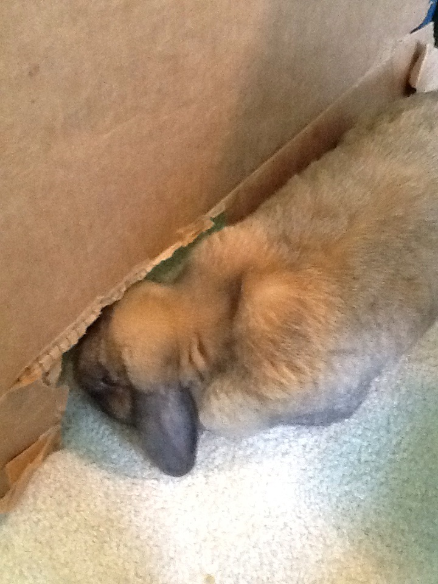

Cardboard Box Hideaway
MATERIALS: one cardboard box
1. Cut a hole in the side of a large cardboard box.The hole should be big enough
for your bunny to fit through easily. If you want you can also add more
entrances on the other sides. If you have a big enough box, but
a smaller box inside the bigger one so your bunny can climb on
top of that one or inside it. Put small toys and treats hidden
in the smaller box or just in corners. Your bun will love climbing
around and exploring his or her new hide-out.
